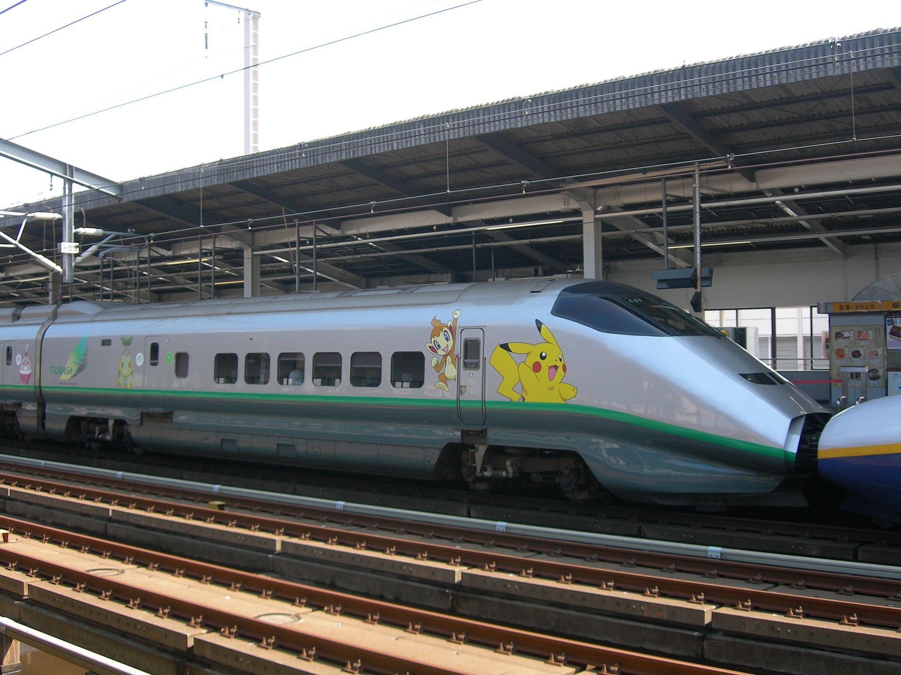
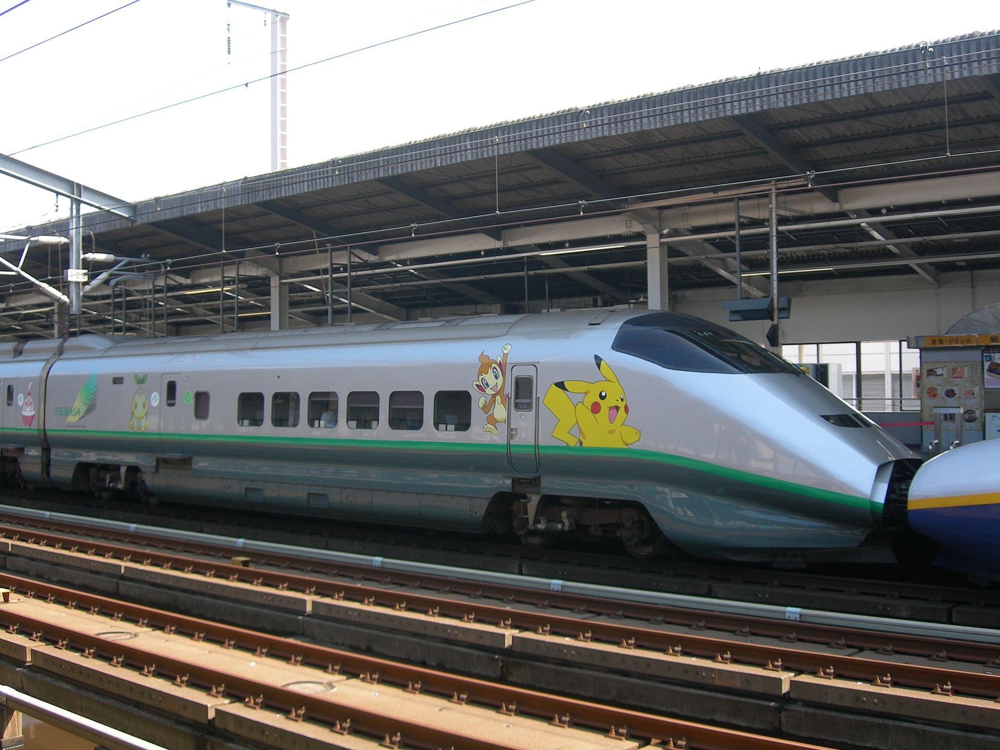

Cultural Influences
Pokémon, being a globally popular franchise, has left a significant mark on today's popular culture. The Pokémon characters have become pop culture icons; examples include two different Pikachu balloons in the Macy's Thanksgiving Day Parade, Pokémon-themed airplanes operated by All Nippon Airways, merchandise items, and a traveling theme park that was in Nagoya, Japan in 2005 and in Taipei in 2006. Pokémon also appeared on the cover of the U.S. magazine Time in 1999. The Comedy Central show Drawn Together has a character named Ling-Ling who is a parody of Pikachu. Several other shows such as ReBoot, The Simpsons, South Park, The Grim Adventures of Billy & Mandy, Robot Chicken, All Grown Up!, and Johnny Test have made references and spoofs of Pokémon, among other series. Pokémon was featured on VH1's I Love the '90s: Part Deux. A live action show called Pokémon Live! toured the United States in late 2000. It was based on the Pokémon anime.[citation needed] Jim Butcher cites Pokémon as one of the inspirations for the Codex Alera series of novels.
In November 2001, Nintendo opened a store called the Pokémon Center in New York, in Rockefeller Center, modeled after the two other Pokémon Center stores in Tokyo and Osaka and named after a staple of the video game series. Pokémon Centers are fictional buildings where Trainers take their injured Pokémon to be healed after combat. The store sold Pokémon merchandise on a total of two floors, with items ranging from collectible shirts to stuffed Pokémon plushies. The store also featured a Pokémon Distributing Machine in which players would place their game to receive an egg of a Pokémon that was being given out at that time. The store also had tables that were open for players of the Pokémon Trading Card Game to duel each other or an employee. The store was closed and replaced by the Nintendo World Store on May 14, 2005. Three Pokémon Center kiosks were put in malls in Washington, with one in Tacoma and one in Seattle remaining. The Pokémon Center online store was relaunched on August 6, 2014.
Professor of Education Joseph Tobin theorizes that the success of the franchise was due to the long list of names that could be learned by children and repeated in their peer groups. Its rich fictional universe provides opportunities for discussion and demonstration of knowledge in front of their peers. For the French versions of Pokémon media, Nintendo took care to translate the name of the creatures so that they reflected French culture and language. The names of the creatures were linked to its characteristics, which converged with the children's belief that names have symbolic power. Children can pick their favourite Pokémon and affirm their individuality while at the same time affirming their conformance to the values of the group, and they can distinguish themselves from others by asserting what they liked and what they did not like from every chapter. Pokémon gained popularity because it provides a sense of identity to a wide variety of children, and lost it quickly when many of those children found that the identity groups were too big and searched for identities that would distinguish them into smaller groups.
Pokémon's history has been marked at times by rivalry with the Digimon media franchise that debuted at a similar time. Described as "the other 'mon'" by IGN's Juan Castro, Digimon has not enjoyed Pokémon's level of international popularity or success, but has maintained a dedicated fanbase. IGN's Lucas M. Thomas stated that Pokémon is Digimon's "constant competition and comparison", attributing the former's relative success to the simplicity of its evolution mechanic as opposed to Digivolution. The two have been noted for conceptual and stylistic similarities by sources such as GameZone. A debate among fans exists over which of the two franchises came first. In actuality, the first Pokémon media, Pokémon Red and Green, were released initially on February 27, 1996; whereas the Digimon virtual pet was released on June 26, 1997.
Fan Community
While Pokémon's target demographic is children, early purchasers of Pokémon Omega Ruby and Alpha Sapphire were in their 20s. Many fans are adults who originally played the games as children and later returned to the series.
Bulbapedia, a wiki-based encyclopedia associated with longtime fan site Bulbagarden, is the "Internet's most detailed Pokémon database project". Bulbapedia received a mobile makeover with the release of BulbaGo, the app for Bulbapedia. The app's developer, Jonathan Zarra, was the same that created the location based chat app GoChat for Pokémon Go. The Bulbapedia App was so successful that within three days of its release, it was acquired by Bulbapedia and turned into its official app.
A significant community around the Pokémon video games' metagame has existed for a long time, analyzing the best ways to use each Pokémon to their full potential in competitive battles. The most prolific competitive community is Smogon University, which has created a widely accepted tier-based battle system. Smogon is affiliated with an online Pokémon game called Pokémon Showdown, in which players create a team and battle against other players around the world using the competitive tiers created by Smogon.
In early 2014, an anonymous video streamer on Twitch launched Twitch Plays Pokémon, an experiment trying to crowdsource playing subsequent Pokémon games, starting with Pokémon Red.
A challenge called the Nuzlocke Challenge was created in order for older players of the series to enjoy Pokémon again—but with a twist. The player is only allowed to capture the first Pokémon encountered in each area. If they do not succeed in capturing that Pokémon, there are no second chances. When a Pokémon faints, it is considered "dead" and must be released or stored in the PC permanently. If the player faints, the game is considered over, and the player must restart. The original idea consisted of 2 to 3 rules that the community has built upon. There are many fan made Pokémon games that contain a game mode similar to the Nuzlocke Challenge, such as Pokémon Uranium.
 
